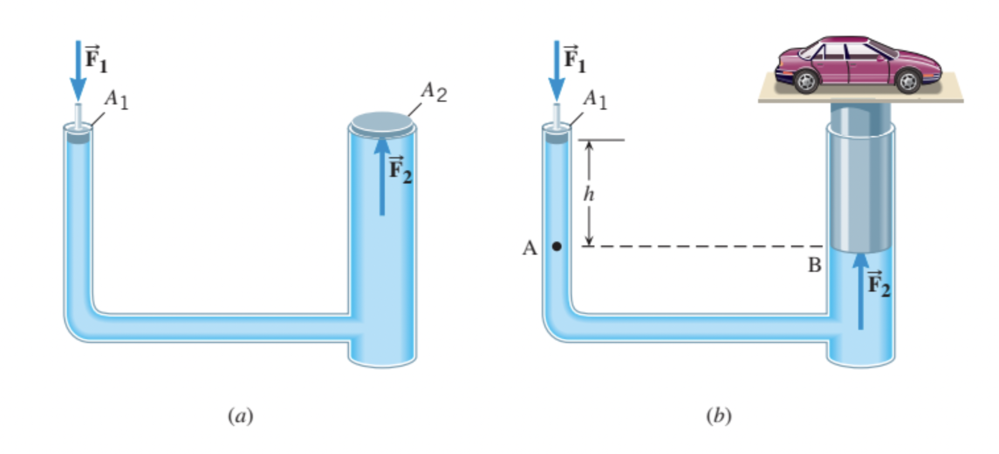

Phys 115 Intro on fluids
Yuhao
Intro
- Check the concept summary in the book for the chapter
- Take a look through the math without thinking what the variables represent
- The math is actually mostly addition and multiplication
- Maybe we don't need to be afraid of the math yet
Concepts
Density
Expression
\begin{equation}\nonumber \rho = \frac{m}{V} \end{equation}- Does the definition make sense?
- We may think of a block with substance evenly distributed
- If we want to know how dense the distribution of substance is, we may divide the total mass of the block by the volume of the block
- What if the substance is not evenly distributed in the block?
- In this case, we devide the block into smaller blocks where the substance is distributed evenly enough
- What about the density in fluids?
- We can imagine deciding the fluids into blocks and measure the mass and volume of one of the blocks to determine the local density
Pressure
Expression
\begin{equation}\nonumber P = \frac{F}{A} \end{equation}- Does the definition make sense?
- The expression tells a story.
- A force is evenly distributed on an area.
- For the same size of the area, if the force is bigger, the pressure is bigger. (I think this makes sense.)
- If with the same amount of the force, when the area is smaller, the pressure is bigger. (I think this is making sense, too)
- What do you think about the definition? Do you think it makes sense?
Pressure in fluids
- How to define a pressure in fluids that makes sense?
- First we carve out an imaginative area in a fluid
- Then suppose we know the force from the surrounding fluids is evenly acting on the area
- After that we divide the total force by the size of the area to get the pressure
Calculating the pressure in a fluid at a certain depth
- Show on the board
- Imagine drawing a thin rectangular block in a fluid
Calculate the pressure on the bottom surface from the total weight of the fluid in the block
\begin{equation}\nonumber P = P_{air} + \rho g h \end{equation}
Archimedes' principle: application of the pressure in a fluid at a certain depth
- The Archimedes' principle is regarding the buoyancy force
- The buoyancy force is from the pressure difference between upper and lower surfaces of an object
The pressure at a certain point of the surface of an object is higher when it is at a larger depth in the fluid
The Archimedes' principle: the buoyancy force equals to the weight of the fluid displaced
\begin{equation*} F_B = W_{\mathrm{fluid}} \end{equation*}
What about the pressure in other directions?
- Assume the pressure at a certain place in a fluid is the same in any directions
- Further we assume the Pascal's principle, which states that change in the pressure applied to an enclosed fluid is transmitted to all parts of the fluid and the walls.
- Let's see an example
The example of a hydraulic car lift

- If we imagine a thin sheet of fluid perpendicular to the axis in the horizontal section of the pipes, the forces from the pressure at the two sides needs to balance
- Equations
- Suppose nobody applies \(F_1\) to push \(A_1\) yet
- Suppose the weight of the car is 1000\(~kg\)
What is \(h\)?
\begin{equation*} \rho g h = \frac{F_2}{A_2} \end{equation*}
- It means that when \(A_2\) is very big, \(h\) can be very small
If we apply \(F_1\) so that \(h = 0\), then
\begin{equation*} \frac{F_1}{A_1} = \frac{F_2}{A_2} \end{equation*} \begin{equation*} F_1 = F_2\frac{A_1}{A_2} \end{equation*}
- What it says is that when \(A_2\) is very big and \(A_1\) is very small, the \(F_1\) required to lift the car can be very small.
- It's a little counter-intuitive. How does it happen to lift a big weight with a small force?
- The big weight is indeed lifted by a small force
- But the small force \(F_1\) needs to push over a large distance to lift the big weight \(F_2\) by a little bit
- The space created by a large area sweeping over a small distance needs to be filled by a small area sweeping over a large distance
The continuity equation and the Bernoulli's equation
- Continuity equation is from mass conservation
- Bernoulli's equation is from energy conservation
- The conservation here is from a slightly different point of view than what we saw up to now
- Focus on a fixed volume in space instead of following the trajectory of a block
- The former is called Euler approach. The latter is called the Lagrange approach
Continuity equation
- Based on mass conservation
- Focus on a fixed volume
- Demonstrate on board
In the continuity equation, the volume of fluid flowing in equal to the volume of fluid flowing out
\begin{equation*} \rho A_1 v_1 \Delta t = \rho A_2 v_2 \Delta t \end{equation*} \begin{equation*} A_1 v_1 = A_2 v_2 \end{equation*}
Bernoulli's equation: an application of the continuity equation and energy conservation
- Assuming steady flow
- Continuity equation, mass conservation
- Energy conservation, energy change within the volume equals to the energy change at the outlets due to the fluid flowing
Demonstrate on board
\begin{equation*} \Delta E_1 = \Delta E_2 \end{equation*} \begin{equation*} P_1 A_1 v_1 \Delta t + \frac{1}{2} v_1^2 \rho A_1 v_1 \Delta t + \rho g y_1 A_1 v_1 \Delta t = P_2 A_2 v_2 \Delta t + \frac{1}{2} v_2^2 \rho A_2 v_2 \Delta t + \rho g y_2 A_2 v_2 \Delta t \end{equation*}Use the continuity equation
\begin{equation*} P_1 + \frac{1}{2} \rho v_1^2 + \rho g y_1 = P_2 + \frac{1}{2} \rho v_2^2 + \rho g y_2 \end{equation*}
Example: A leaking hydraulic car lift
- Imagine the branch leading to the piston at \(A_1\) is cut off at the connection to chamber 2.
- Fluid would flow out of the hole with cross section area \(A_1\)
- The smaller the cross section of \(A_1\), the slower the car would descend, and the easier it would be to fix the leak.
- Question: How fast would the fluid leak?
- Use the continuity equation and Bernoulli's equation. We can calculate the flow rate at the leak
Draw illustration and derive on board
\begin{equation*} A_1 v_1 = A_2 v_2 \end{equation*} \begin{equation*} P_1 + \frac{1}{2} \rho v_1^2 + \rho g y_1 = P_2 + \frac{1}{2} \rho v_2^2 + \rho g y_2 \end{equation*}- Say, we want to find \(v_1\)
Find the expression of \(v_2\) in terms of \(v_1\) from the continuity equation
\begin{equation*} v_2 = \frac{A_1}{A_2} v_1 \end{equation*}Plug it in the energy conservation (Bernoulli equation)
\begin{equation*} P_1 + \frac{1}{2} \rho v_1^2 + \rho g y_1 = P_2 + \frac{1}{2} \rho v_2^2 + \rho g y_2 \end{equation*}Suppose
\begin{equation*} y_2 - y_1 = h_2 \end{equation*}In addition
\begin{equation*} P_2 = \frac{W_{\mathrm{car}}}{A_2} \end{equation*} \begin{equation*} P_1 = 0 \end{equation*}Plug those in
\begin{equation*} \frac{1}{2} \rho v_1^2 = \frac{W_{\mathrm{car}}}{A_2} + \frac{1}{2} \rho \left(\frac{A_1}{A_2} v_1 \right)^2 + \rho g h_2 \end{equation*}Solve for \(v_1\)
\begin{equation*} \frac{1}{2} \rho (1 - \frac{A_1^2}{A_2^2}) v_1^2 = \frac{W_{\mathrm{car}}}{A_2} + \rho g h_2 \end{equation*}The expression for \(v_1\)
\begin{equation*} v_1 = \sqrt{\frac{\frac{2 W_{\mathrm{car}}}{A_2} + 2 \rho g h_2}{\rho \left(1 - \frac{A_1^2}{A_2^2}\right)}} \end{equation*}- Does the expression for \(v_1\) make sense?
- If \(W_{\mathrm{car}}\) is bigger, \(v_1\) is bigger. It makes sense.
- But if \(A_1\) is bigger, \(v_1\) is bigger. Makes sense.
- What about the volume flow rate \(A_1 v_1\)?
- When \(A_1\) increases, the volume flow rate increases. It makes sense.
Flow around an air foil: the example of Bernoulli's principle that we couldn't miss
Acknowledgment
Thanks for your attention